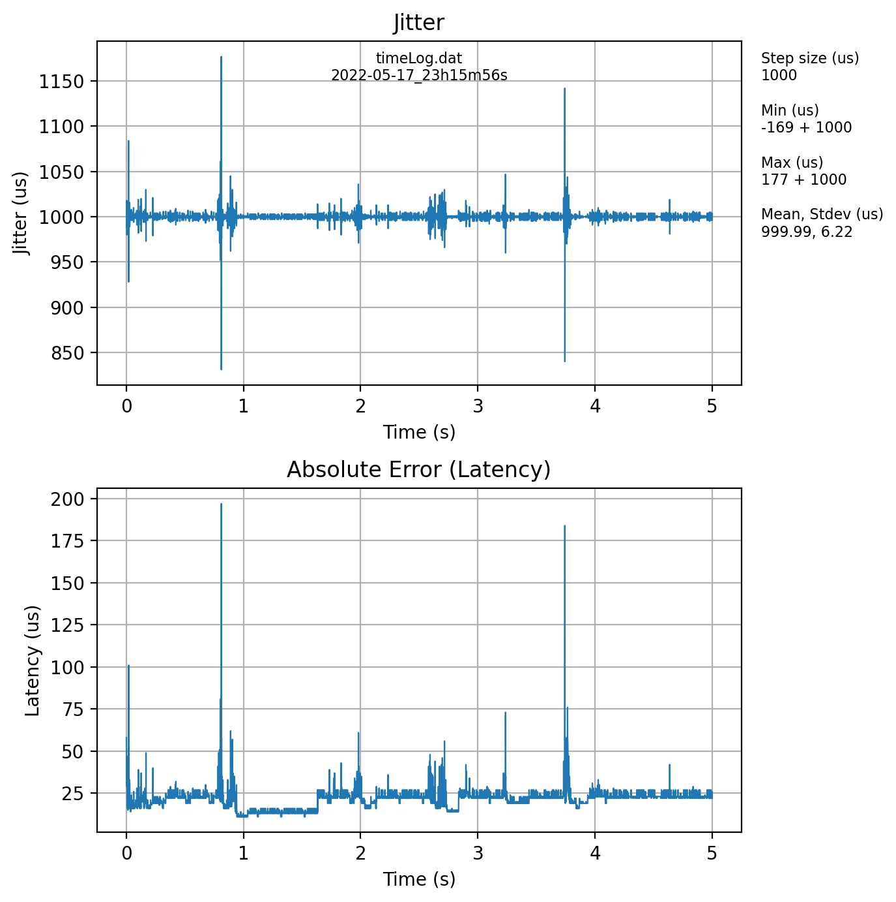

Kyle Chisholm
Real-Time Systems and Embedded Programming
Submission Deadline: June 2, 2022
Realtime profiling tools will be used to characterize the latency and time variation (jitter) of the system, and demonstrate the utility of a preemptible kernel in a hard realtime operating system. A cyclic program with a fixed step timer will be created and timing analyzed.
Hard real-time systems require operations to meet specified timing deadlines and a missed deadline is considered a system failure. For example, a digital control system such as a robotic manipulator may require a fixed interval timer. Filtering and closed-loop control systems are tuned based on a loop duration, also referred to as a “step size”. If this duration deviates from a specified tolerance, the control system may go unstable and lead to catastrophic failure. If the control loop itself is robust and won’t go unstable with variation in loop step size, a deviation from a robot trajectory, even over a short duration, may cause damage to surroundings or an individual interacting with the robot.
Linux was not initially designed as a real-time operating system and meeting strict deadlines was less of a priority compared to providing a solid desktop computing user experience. The Linux real-time project was established to incorporate changes into the mainline Linux kernel that allow the scheduler to be preempted by real-time processes. These changes (patches) can be enabled when configuring the Linux kernel. The following table provides links from the Linux Foundation with resources specific to the PREEMPT_RT kernel patch development:
| Link | Description |
|---|---|
| Technical basics: Important aspects for real time | A must-read regarding basics of preemption and real-time Linux |
| HOWTO: RTOS and RT Applications | Getting started with real-time application development for Linux |
Testing the embedded platform and the timing of your application is a necessary step in evaluating the capabilities of the software to meet hard timing deadlines. Hardware is typically supported by commercial RTOSes with Board Support Packages (BSPs) but with most free Linux distributions there are no officially supported real-time platforms. The Open Source Automation Development Lab (OSADL) runs a quality assessment “farm”, testing Linux configured with PREEMPT_RT on many platforms and distributions. Some of their boards under test are Raspberry Pis with latency plots and kernel configuration scripts made available online. The following plots are sample latency histograms of a multi-core Raspberry Pi 4 and an original single-core module on the test rack:
Latency is a key metric of realtime performance. It is the delay after a timer is triggered before processing begins. For a timed loop, the latency must be low enough to allow sufficient processing time such that it can complete before the next timer deadline occurs. Debugging errors caused by spikes in latency can be difficult to track down since source of latency can come from the OS performing other tasks, and may not be easily reproducible.
The program Cyclictest is a very useful tool for testing real-time performance (specifically timing latencies). In this lab, system latencies will be tested with cyclictest. Jitter is another metric commonly used in reference to network communications.
Desktop computer with Linux, Windows, or Mac operating system.
Wired or wireless local network.
The program cyclictest is part of the package rt-tests and timing plots are generated with Python. Install the prerequisites on your pi with the commands:
sudo apt install -y \
python3-numpy \
python3-matplotlib \
rt-testsClone source from GitHub repository https://github.com/chishok/CST8703-Lab1.
First check the kernel version with the command
uname -rThere should be no -rt## shown where ## is the realtime patch number. This is the default (not fully preemptible) kernel installed on the Raspberry Pi. Run the script
./script/run_cyclictest.shThe script will take a few minutes to complete. Some warnings appear which can be ignored. When it’s complete, there should be a new data folder created containing the histogram output text files and latency plots. The following figure shows an example output latency plot from a Raspberry Pi Zero 2 W without a preemptible kernel (no PREEMPT_RT patch):
One filename is prefixed cyclictest_noload which was captured from running cyclictest without cpu-heavy processes running in the background. The other files prefixed cyclictest_highload was run with commands that intentionally utilize all four cores on the processor. Inspect the scripts run_cyclictest.sh and plot_cyclictest.py to understand the commands that were used to generate the latency histogram plots.
A preemptible kernel can be installed on a Raspberry Pi by following the directions on kdoren’s GitHub repository. In order to install this kernel, run the script:
./script/install_raspi_rt_kernel.shRestart the Raspberry Pi. The new kernel should be installed. Check the kernel version with the command
uname -rVerify that the kernel version contains -rt39 which signifies the PREEMPT_RT patch was applied. Test the patched version by running cyclictest again:
./script/run_cyclictest.shFour more files should be added to the data folder with the new kernel suffix name.
Alter the target program JitteryTimers to implement a cyclic timer. Make your modifications between the comments
/*
* STUDENT WORK SECTION BEGIN
* ==========================
*/and
/*
* ========================
* STUDENT WORK SECTION END
*/The files main.c and ac_timing.c require modifications. Refer to Linux foundation real-time HowTo pages online for hints on implementing the timed loop.
Test the cyclic timed loop by running the script
./scripts/run_submission.shThe program will be run three times at different step sizes and durations:
||| |||
Three plots are generated in the data folder showing the jitter and timing errors of each run. The python script ./scripts/plot_timing.py plots the data saved to file. Read the script ./scripts/run_submission.sh to understand how the software is built from source and is run. Experiment with different combinations of duration and step size. The output plot of a run at step size of 1000us may look something like this (run on a Pi Zero 2 W):
 For example, the run with step size of 1000 microseconds should look like:
The output printed to terminal while the script runs may look like this:
Arguments parsed
step_size (us): 1000
duration (s): 5.00
filename: data/timeLogTs1000.dat
priority: 90
Number of execution steps: 5000
Process info:
timestamp: 2022-05-06 07:56:47
process id: 114288
thread policy: SCHED_RR
thread priority: 90
thread id: 139912015099712
Number of bytes written to file 'data/timeLogTs1000.dat': 20000
Arguments parsed
step_size (us): 500
duration (s): 5.00
filename: data/timeLogTs500.dat
priority: 90
Number of execution steps: 10000
Process info:
timestamp: 2022-05-06 07:56:54
process id: 114372
thread policy: SCHED_RR
thread priority: 90
thread id: 140333485930304
Number of bytes written to file 'data/timeLogTs500.dat': 40000
Arguments parsed
step_size (us): 100
duration (s): 5.00
filename: data/timeLogTs100.dat
priority: 90
Number of execution steps: 50000
Process info:
timestamp: 2022-05-06 07:57:01
process id: 114428
thread policy: SCHED_RR
thread priority: 90
thread id: 140471629178688
Number of bytes written to file 'data/timeLogTs100.dat': 200000Refer to the cyclictest latency plots and jitter time log when discussing the following points:
Include your modified source code and a lab report. Be sure that the command ./scripts/run_submission.sh produces the expected output.